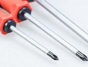
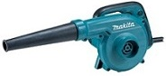
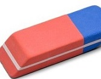

El mantenimiento es el proceso de realizar actividades con el fin de evitar daños y alargar la vida de los equipos de Computación. Como su nombre lo indica, el mantenimiento se realiza con la finalidad de mantener a los equipos de Computación en un estado casi perfecto para garantizar que el equipo dure el tiempo estipulado. Existen distintos tipos de Mantenimientos entre las cuales podemos encontrar:
1.Mantenimiento Preventivo.
2.Mantenimiento Predictivo.
3.Mantenimiento Evolutivo.
4.Mantenimiento Correctivo.
| Datos | Imagen |
|---|---|
|
 |
|
|
|
 |
|
 |
Si a un equipo de computación no se le realiza el debido mantenimiento este puede presentar diversos tipos de problemas, entre los cuales tenemos:
1.Funcionamiento lento
2.Pantalla azul.
3.Pérdida de información.
4.Problemas en las memorias.
5.Daños permanentes en las piezas básicas del computador.
6.Reducción de la vida útil del computador.
1.Revisar los componentes del Hardware
2.No abusar del equipo.
3.Mantener el espacio de trabajo limpio.
4.Cuidar de las conexiones y mantener los cables ordenados.
5.Procurar tener al equipo alejado de fuentes de calor e interferencias.
El mantenimiento es importante porque nos permite mantener nuestros equipos de computación en un buen estado, ideal para que no presente algún tipo de problema en su funcionamiento, permitiéndonos poder realizar nuestras actividades diarias sin algún tipo de problemas. Además nos garantiza que nuestros equipos de computación mantengan su vida útil.